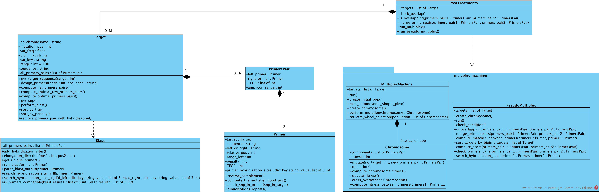
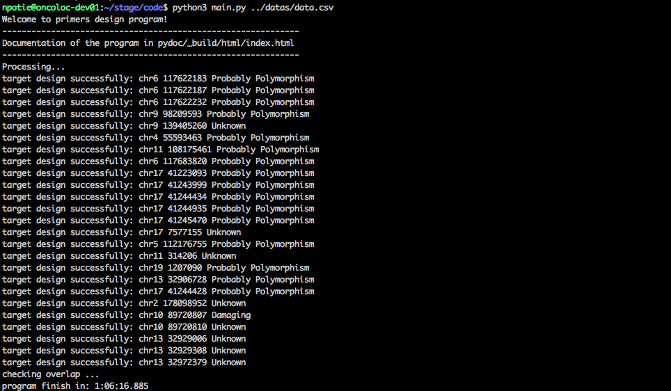
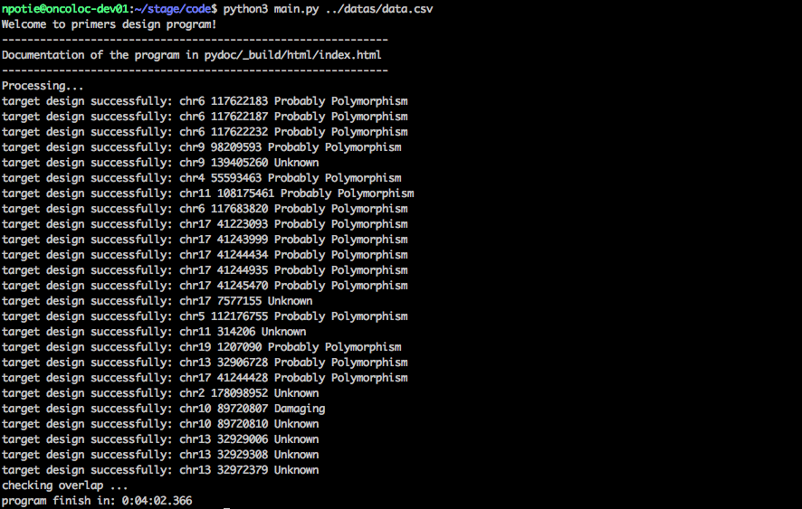
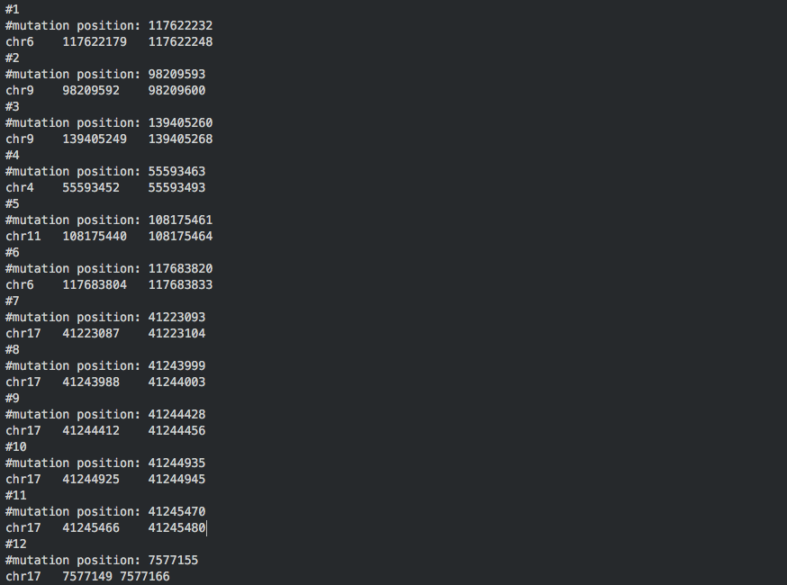
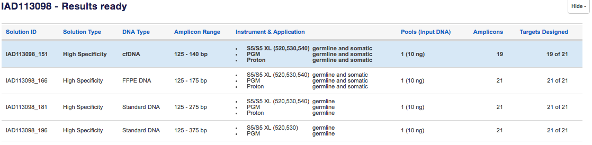
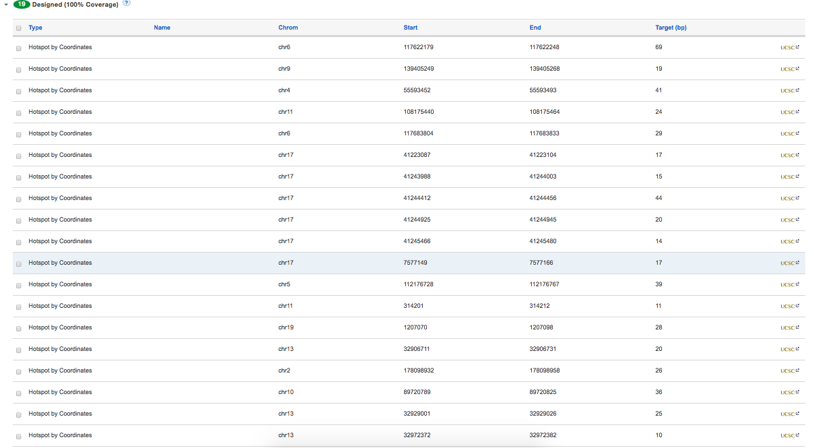
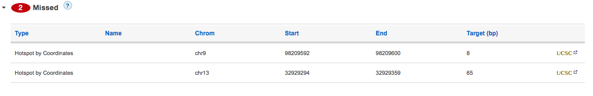

Welcome to primers design’s documentation!¶
Program that computes for each variant an optimize pair of primers. The motivation is to submit to Ampliseq program(https://ampliseq.com/browse.action) all good chromosomic range to have a minimum of errors at the end and then buy oligos nucleotides predicted. So we have to predict the result of Ampliseq program and design our own primers pairs using a PCR in-silico. It creates a bed file containing all chromosomic ranges. For each range, a primers pair has been designed.
Requirements:
- Python 3.5 distribution
- primer3-py 0.5.1: https://pypi.python.org/pypi/primer3-py
- pysam 0.9.1.4: https://pypi.python.org/pypi/pysam
- myvariant 0.3.1: https://pypi.python.org/pypi/myvariant/0.3.1
- dill 0.2.5(for serialisation): https://pypi.python.org/pypi/dill
- Blast+ 2.5.0: https://www.ncbi.nlm.nih.gov/books/NBK52640/
Launching¶
Run the program is pretty simple. Go in the folder ‘code’ wich contains all source code such as main.py Then execute this command:
$ python3 main.py path_of_data_file
Code documentation¶
The project contains all of the files below. Note that each parameter can be setted in config.py
Two multiplex algorithms have been implemented, run without error but are not optimized due to output likely to fail in Ampliseq design or remove too many variants.
Several unit tests have been implemented:
Global information¶
Project motivation¶
The company needs to sequence known variants from blood sample of a patient. To do this, for each variant, a pair of primers has to be design to amplify the variant and then see if:
- the variant is the same as the ucsc genome template.
- the variant is different and has an implication in the cancer.
the proportion of these two is computed. The same technique is done months after to see if the proportion have changed with chimiotherapic treatment.
Technically, blood samples are placed in a PCR machine with other components like primers. The latter are ordered from ThermoFisher company (https://www.thermofisher.com/be/en/home.html) and the Ampliseq design program(https://ampliseq.com/browse.action) is used to order oligonucleotides.
In Ampliseq program, chromosomic range containing the variant are upload and submit. An hour later, the program will design primers pairs for each target (for each chromosomic range). However some ranges will fail and our employee have to change failed chromosomic range and then re-submit. This is time consuming. The goal is to predict good chromosomic range that the program Ampliseq won’t fail. But what Ampliseq program does ? That’s the main challenge.
State of work¶
By now, the program creates correctly good chromosomic range but some errors in Ampliseq program can appear due to unknown reason(s) (bad combinaison of parameters? Multiplex? Unknown constraint(s)?). The program compute only chromosomic range for cfDNA. Other size in ThermoFisher use others constraints
By simulation, sort by penalties give bad results. Do sort_by_tfgr instead.
Here is a typical output of the program (realised with blast):
{kind=link}
The execution time with BLAST (and without running multiplex algorithms) can be optimized such that the program will add hybridisation sites for each primers pair of each target. If we don’t running a multiplex, we don’t need to have hybridisation sites unless for wich we take i.e the first primers pair of the list after sorting. So BLAST could be just performs in the first primers pair instead of all.
Result using with BLAST disabled:
{kind=link}
The program create a bed file “chrom.bed” (in the picture, just first 12 targets have been pictured):
{kind=link}
mutation position display only one position in the range but it could have more than one position in the target. An amelioration is to list all mutations positions within the target. One way to do it is to create an object regrouping two or more target that have been merged
And the result of ThermoFisher (with BLAST disabled):
  {kind=link}
{kind=link}
{kind=link}
As you can see, 2 errors remaining for cfDNA and we couldn’t find any reason to it by the end of internship. The 21 targets include all variants. Multiple variants could be include in one target due to overlapping primers pairs.
Parameters used¶
- Parameters that used this program is really important and influence the result. See below parameters chosen:
- Primer3 parameters:
- Size of primers: 18 - 25 pb (optimal: 20)
- Melting temperature: 57 - 63 (optimal: 60)
- Percentage of GC: 30 - 70
- PCR product size: 51 - 140 pb
- 4 repetitions maximum of mono-nucleotide (exemple: “AAAAA”) accepted
- The millimolar (mM) concentration of monovalent salt cations: 50
- Maximum number of unknown bases (N) allowable in any primer: 0
- Maximum allowable 3’-anchored global alignment score: 3
- Parameters for checking hairpins, self-dimerisation and dimerisation between left and right primers
- No SNP allowed with a gmaf > 0.05 in primer sequence
- 4 repetitions maximum of di-nucleotides allowed in primer sequence
- BLAST parameters:
- blast-short command
- get only hits with an e-value < 1, identity percentage of 100% and pourcentage of sequence covered of 80%
- detects hybridisation elsewhere in the genome when the distance between the left and right primer is < 1000 base pairs.
- Target.py parameters:
- range equal to 100.
- the list of primers pairs are sorted by TFGR (no sorted by penalty).
- doesn’t remove primers pair with hybridisation sites.
- Launch parameters (main.py)
- Performs BLAST.
- Checks overlap.
- Doesn’t execute either multiplex or pseudo-multiplex.
- MultiplexMachine parameters:
- 100 chromosomes as initial population
- 500 generations
- Probability of mutation of 20%
- Probability of cross-over of 30%
Of course, the value of each parameter can be changed but will change the output of the program. We choose theses parameters above to fit as good as we can to ThermoFisher algorithm (and by respect to primer design procedure in general). You can change each of theses parameters in config.py
Workflow¶
- Week 1:
- parse the CSV data file.
- Get the sequence from ucsc containing the varient, search of an adequate library.
- Integration of primer3 algorithm to design pairs of primers along the sequence. At each iteration, the algorithm remove one nucleotide at both end of the sequence and compute primers pair (symetric sub-string)
- Search of adequate parameters and exploration of primer3 API.
- Search of a PCR in-silico program. Tentative to use MPprimer (https://bmcbioinformatics.biomedcentral.com/articles/10.1186/1471-2105-11-143) but failed because source code in python 2 and errors in indentations
- Search other alternative of MPprimer, find SIGMA ALDRICH and BIORAD but the company must use ThermoFisher website due to the PCR machine produced by ThermoFisher.
- Implementation of a function that creates a bed file.
- Week 2:
- Research of good settings of primer3 to match as good as possible to Ampliseq design
- Optimisation of the function that compute all primers pairs of a sequence. Using a symetric approach, it don’t compute all possible primers. So, the amelioration computes all possibles pairs.
- Submission of my program output to ThermoFisher. Why some targets fail ? Research of reasons of failure...
- SNP detection in primers sequences using my variant library. A SNP in a primer sequence can be a cause of failure.
- Integration of Needleman & Wunsch to align two primer’s sequences. Avoid it because the alignment with gaps in the sequence don’t have sense with primers.
- Check of self-hybridisation and hairpin in primer’s sequences.
- Begin of implementation of the multiplex using a genetic algorithm (http://link.springer.com/article/10.1007/s00500-006-0137-8).
- Week 3:
- Finalisation of the multiplex. Discussion of parameters.
- The multiplex don’t produced results expected. It’s a failure.
- Thinking of another multiplex algorithm (the pseudo mutliplex)
- Discovery of new constraints such as GC-clamp, poly-bases, di-nucleotides repeats, overlap ...
- Research a library for blasting primer’s sequences (could be one cause of failure in Ampliseq program)
- Wrapping blast in Python using BLAST+ suite.
- Week 4:
- Implementation of the pseudo-multiplex thinked the last week. It’s a NP-complete problem.
- Discussion on how to find an optimum that will be accepted by ThermoFisher
- Optimisation of BLAST wrapper algorithm.
- Code review: the code respect PEP8 guideline.
- Week 5
- More comments of all functions of the program to produce a pydoc using Sphinx (http://www.sphinx-doc.org/en/1.4.8/).
- Creation of documentation of the project.
- Implementation of unit tests for parser.py, target.py, primer.py, primersPair.py. In addition, some bugs have been fixed.
- Creation of UML diagram.
- Week 6
- Finishing unit tests
- Bug fixed
- Finishing documentation
- Creation of postTreatments.py and conf.py
- Update UML diagram
- Tentative to remove the two remaining errors in ThermoFisher by calculate the GC pourcentage, dinucleotide repetition and monoucleotide repetition between primers. Unfortunately, it’s not the cause of errors.
Difficulties and perspectives¶
The Ampliseq design algorithm of ThermoFisher is “black box”. The pipeline details briefly what it does but elude a lot of things. It’s difficult to implement an algorithm that micmic Ampliseq due to a lot of constraints that we don’t know.
- Ampliseq doesn’t likely use Primer3 program to create primers. However, Primer3 is the only program with that purpose and serious found. Are parameters of Primer3 good setted ? Is it the same parameters that Ampliseq use ?
- Wich BLAST distribution use ThermoFisher? On wich database version of hg19 database?
- my_variant library use the latest version of dbsnp. Does Ampliseq use the lastest ? I don’t thing so.
- multiplex algorithms find a local optimum (optimized solution) but makes errors in Ampliseq? Wich technique ThermoFisher use?
The remaining work involve a lot of research.
Additionally, validate our solution to ampliseq program take a lot of times: nearly one hour if BLAST enable + 1 to 2 hours in Ampliseq program. So it’s not easy to know if our solution will work.
Submission to Ampliseq tutorial¶
Here is a small tutorial to use the right Ampliseq algorithm.
- Go to https://ampliseq.com and sign in (you have to create an account if you don’t have one).
- Name your design and select options like below and click on “add targets”
{kind=link}
- Click on “Upload File”, Type “BED File” and then choose the file created by the algorithm and then select “cfDNA” type. The “errors” are due to comments in the bed file, no worry
{kind=link}
- Click on “Submit targets” at the top of the page. Your targets are submitted. You will receive an e-mail with the results.
Acknowledge¶
I would like to thanks all person involve one way or another in my project and in particular Maxime Lienard that gives a great help and Gregori Ghitti for his advices. I also give a big thank you to the company, ONCODNA, that recruit me for this internship. Thank you for giving me a concrete project that meet the needs of biologists. This was a great first experience in the professional world, very instructive and challenging.
Indices and tables¶
Useful links¶
- UCSC: https://genome.ucsc.edu/
- primer3 API: http://primer3.sourceforge.net/primer3_manual.htm
- BLAST+ command line option: https://www.ncbi.nlm.nih.gov/books/NBK279675/
- dbSNP: https://www.ncbi.nlm.nih.gov/projects/SNP/
- ThermoFisher Ampliseq pipeline: https://www.ampliseq.com/help/pipelineDetails.action
- ThermoFisher hotspots design: https://www.ampliseq.com/help/hotspotDesigns.action
- Multiple primer analyser by ThermoFisher: https://www.thermofisher.com/be/en/home/brands/thermo-scientific/molecular-biology/molecular-biology-learning-center/molecular-biology-resource-library/thermo-scientific-web-tools/multiple-primer-analyzer.html#/legacy=www.thermoscientificbio.com
- Designing PCR and Sanger Sequencing Primers– Seq It Out #5: https://www.youtube.com/watch?v=P6Nm9Vxyzj0&list=PLGlvFEwL2wDFVLBA1egJFwHyetpVDPExK&index=13
- Tips for design PCR primers: https://www.youtube.com/watch?v=OcN6mML3DGI
- my_variant documentation: http://docs.myvariant.info/en/latest/doc/data.html
- pydna: http://bmcbioinformatics.biomedcentral.com/articles/10.1186/s12859-015-0544-x
- multiplex algorithm: http://link.springer.com/article/10.1007/s00500-006-0137-8